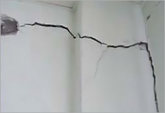

@@include('inc/breadcrumb.html')

@@include('inc/footer.html')
국내 지진피해 사례
국내 주요 지진
-
지진 발생정보
- 발생시각
- 2007.01.20 20:56
- 위치
- 강원도 평창군 도암면~진부면 경계지역 [37.68°N, 128.59°E]
- 규모
- 4.8
- 깊이
- 10㎞
- 최대진도
- Ⅴ(강릉·평창), Ⅳ(속초·춘천·원주·영월·태백·삼척)
-
주요 피해사례
- 재산피해
- 일부 노후 조적조 건물의 벽체에 균열 발생, 버스정류장 기왓장 일부 파손
-

[학교시설 피해]
출처: 국민안전처, 2017년 5월, 9.12지진 백서, 339p -

[우사 건물 피해]
출처: 국민안전처, 2017년 5월, 9.12지진 백서, 339p
-
관련자료
오대산 지진
-
지진 발생정보
- 발생시각
- 2017.11.15. 14:29
- 위치
- 경북 포항시 북구 북쪽 8km 지역 [36.11°N, 129.37°E]
- 규모
- 5.4
- 깊이
- 7㎞
- 최대진도
- Ⅵ
-
주요 피해사례
- 인명피해
- 부상 135명, 1,797명의 이재민 발생
- 재산피해
- 850억원, 사유시설 56,622개소, 582억 원 및 공공시설 417개소, 268억 원의 피해 발생
-
[필로티 구조 건축물 피해 사진]
출처: 행정안전부, 2018년 8월, 2017포항지진 백서 -

[포항 지진 피해]
출처: 국토매일
-
관련자료
포항 지진
-
지진 발생정보
- 발생시각
- 2016.09.12. 19:44
- 위치
- 경상북도 경주시 남남서쪽 8.2km 지역 [35.76°N, 129.19°E]
- 규모
- 5.8
- 깊이
- 15㎞
- 최대진도
- Ⅳ(경주·대구), Ⅴ(부산·울산·창원)
-
주요 피해사례
- 인명피해
- 부상 23명, 이재민 111명
- 재산피해
- 총 11,020백만 원 ※ 공공시설 182건(약 58억), 문화재 59건(약 50억) 등
-
[9.12 지진으로 인한 주택 파손]
출처: 국민안전처, 2017년 5월, 9.12지진 백서 -
[지진으로 인한 사찰 건물 파손]
출처 : 경상일보
-
관련자료
경주 지진
-
지진 발생정보
- 발생시각
- 2016.07.05 20:33
- 위치
- 울산광역시 동구 동쪽 52km 해역 [35.51°N, 129.99E]
- 규모
- 5.0
- 깊이
- 19㎞
- 최대진도
- Ⅳ(울산·부산·포항), Ⅲ(마산·대구·영천), Ⅱ(대전·경남 일부)
-
주요 피해사례
- 기타피해
- 울산과 부산, 경상도 지역, 호남/충청 지역에서도 진동이 감지
울산 남구의 영화관에서는 상영되던 영화가 중지
울산의 2개의 고등학교에서는 야간자율학습을 중단 및 학생 귀가 조치
-
관련자료